Kompletní průvodce webem tasstudio.eu, asistentkou Tessou, administrací, CRM a návrhy webů pro klienty. Je psaný pro člověka, který systém nikdy neviděl: co kde najde, jak co udělat krok za krokem a co dělat, když něco nejde podle plánu.
Web
https://www.tasstudio.eu
Administrace
https://www.tasstudio.eu/admin/
Stránky s návrhy pro klienty
https://nahledy.tasstudio.eu
Kontakt studia
tasstudio@tasstudio.eu
Stav k
7. 11. 2026 (CRM s návrhy webů, ts-design-studio 0.13.0)
Obsah
Začínáme
Co je co
Slovníček
Kdo co dělá a kam chodí upozornění
Ukázková data v manuálu
Veřejný web
Hlavička, jazyky, tmavý vzhled
Stránky webu
Reference a detail zakázky
Ukázkové weby
Lišta cookies
Poptávkový formulář
Telefon
Asistentka Tessa
Co umí a co ne
Psaní a hlas
Předání poptávky
Audit webu v chatu
Ochrana a limity
Administrace: přihlášení a orientace
Přihlášení a hesla
Rozvržení obrazovky
Administrace v telefonu
Reference (zakázky na webu)
Seznam a pořadí
Editor zakázky po oddílech
Ukládání a koncept
Nová, skrytá a smazaná zakázka
Kontakty a údaje
Zálohy
Účet a nápověda
CRM: přehled, leady, úkoly
Pojmy CRM
Přehled
Seznam leadů a filtry
Detail leadu
Kontakty, úkoly, stavy
Úkoly
Nový lead, import, export
Archiv a trvalé smazání
Poptávky z webu a od Tessy
GDPR dokument a souhlas s referencí
Návrhy webů pro klienty
Nahrání a přehled
Odeslání klientovi
Co vidí klient
Připomínky a schválení
Nová verze, odvolání
Audity webů
Návštěvnost
Ukázky odesílaných e-mailů
Scénáře a řešení problémů
Bezpečnost a pravidla
Technická příloha
Kapitola 1Začínáme
1.1 Co je co
Celý systém má čtyři části, které spolu souvisejí:
Část
K čemu slouží
Kde
Veřejný web
Prezentace studia v 18 jazycích: služby, reference, ukázkové weby, kontakt a poptávkový formulář.
www.tasstudio.eu
Tessa
AI asistentka v pravém dolním rohu webu. Odpovídá návštěvníkům, doporučí referenci, umí udělat rychlý audit webu a předat poptávku studiu.
tlačítko „Tessa“ na každé stránce
Administrace
Neveřejná část pro tým: úpravy referencí a kontaktů, zálohy, CRM s leady a úkoly, návrhy webů pro klienty, audity, návštěvnost.
www.tasstudio.eu/admin/
Stránky s návrhy
Neveřejné stránky, kde si klient prohlédne návrh webu, napíše připomínky nebo návrh schválí. Odkaz dostane jen e-mailem a má omezenou platnost.
nahledy.tasstudio.eu/…
1.2 Slovníček
Lead
Zájemce nebo potenciální klient v CRM (firma či člověk). Vzniká ručně, importem ze souboru, z formuláře na webu nebo od Tessy.
Odpovědná osoba
Člen týmu, který má lead na starosti. Lead bez odpovědné osoby je nepřiřazený.
Kontakt
Záznam o proběhlé komunikaci s leadem (telefonát, e-mail, schůzka…) s výsledkem.
Další krok / úkol
Co se má s leadem stát dál a do kdy. Každý aktivní lead by měl mít další krok.
Reference / zakázka
Hotový projekt zobrazený na webu v sekci Práce/Reference.
Návrh webu
Hotový návrh (ZIP nebo HTML), který nahrajete k leadu a pošlete klientovi k připomínkám.
Verze návrhu
Každé nové nahrání k témuž návrhu je další verze (verze 1, 2, 3…). Klient vždy vidí verzi, kterou jste mu poslali.
Doručení
Jedno odeslání odkazu na návrh konkrétnímu příjemci, s datem platnosti.
Mezipaměť
Kopie souborů webu uložená v prohlížečích návštěvníků, aby se web načítal rychleji.
Audit webu
Automatické měření cizího webu (rychlost, přístupnost, SEO) a postřehy AI ke vzhledu.
1.3 Kdo co dělá a kam chodí upozornění
V administraci pracují Kryštof Trčala a Matouš Slováček. Každý se přihlašuje pod svým jménem, aby u leadů, kontaktů a úkolů bylo vidět, kdo co udělal.
Poptávky z webu a od Tessy chodí e-mailem na tasstudio@tasstudio.eu a zároveň se samy založí jako lead v CRM.
Připomínky a schválení návrhů od klientů chodí na tasstudio@tasstudio.eu a odpovědné osobě leadu; v CRM se k leadu založí úkol.
Nic se klientům neposílá samo. E-mail s návrhem odejde jen tehdy, když ho člověk v CRM zkontroluje a výslovně potvrdí.
1.4 Ukázková data v manuálu
Všechny snímky jsou z ukázkové kopieSnímky obrazovek vznikly na zkušební kopii webu se smyšlenými firmami a osobami (Pekárna U Zlatého klasu, Autoservis Rychlík, Kavárna Modrý hrnek…) a smyšlenými adresami @example.test. Adresy v ukázkách začínají localhost nebo 127.0.0.1; na skutečném webu je místo nich www.tasstudio.eu, resp. nahledy.tasstudio.eu. Čísla a texty v ukázkách se od skutečného stavu liší.
Kapitola 2Veřejný web
Web vidí každý návštěvník. Texty stránek a služeb se mění ve zdrojových souborech (úkol pro vývojáře); reference, kontakty, údaje provozovatele a ceny upravíte sami v administraci (kapitoly 5 a 6).
2.1 Hlavička, jazyky, tmavý vzhled
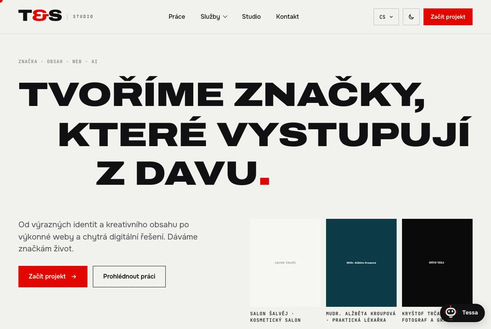
Úvodní stránka (čeština). Nahoře menu Práce, Služby, Studio, Kontakt; vpravo jazyk, přepínač vzhledu a tlačítko Začít projekt.
Logo T&S vede vždy na úvodní stránku.
Práce – seznam referencí. Služby – rozbalovací nabídka pěti služeb. Studio – o nás. Kontakt – kontakty a poptávkový formulář.
Jazyk (CS) – web je v 18 jazycích: čeština, angličtina, němčina, španělština, francouzština, portugalština, italština, polština, nizozemština, ukrajinština, arabština (zprava doleva), hindština, čínština, japonština, korejština, turečtina, indonéština a ruština. Výchozí adresa www.tasstudio.eu je anglická, česká verze je na /cs/.
Měsíc / slunce – přepíná světlý a tmavý vzhled. Bez volby web respektuje nastavení zařízení.
Začít projekt – vede na poptávkový formulář.
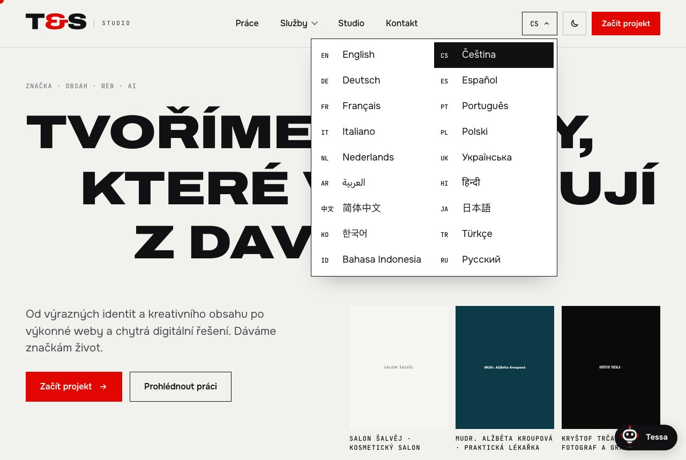
Výběr jazyka
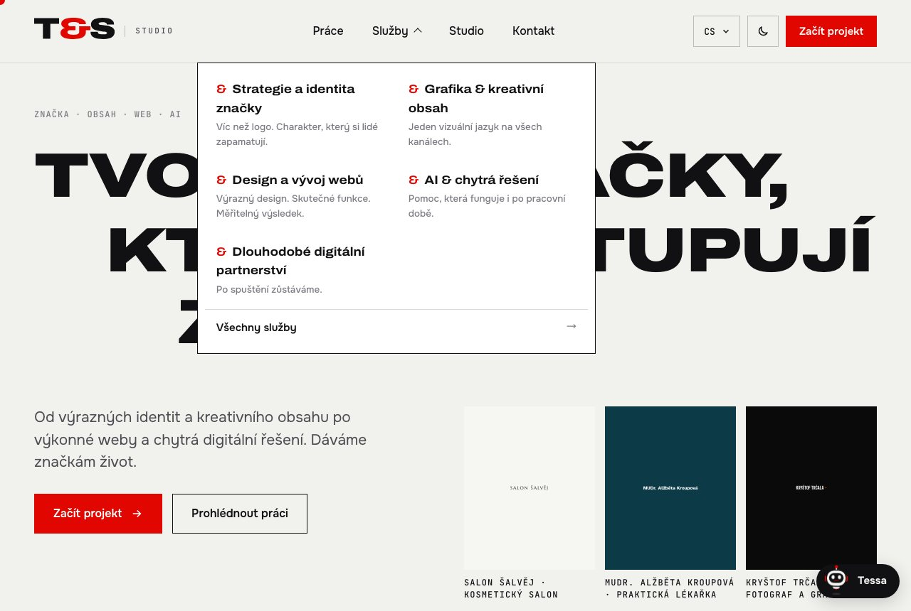
Nabídka Služby
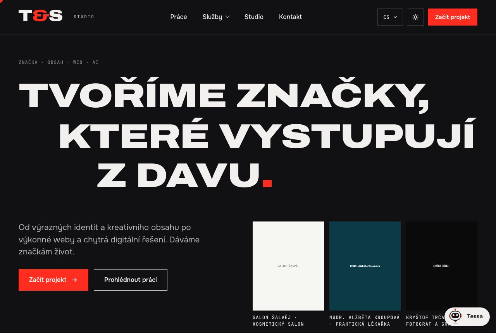
Tmavý vzhled
Kromě češtiny a angličtiny jsou překlady strojové a rodilý mluvčí je zatím nekontroloval. Pokud vás klient upozorní na chybu v překladu, zapište ji a předejte vývojáři.
2.2 Stránky webu
Stránka (česky)
Obsah
Úvod /cs/
Hlavní sdělení, vybrané reference, služby, rychlý formulář.
Reference /cs/reference.html
Všechny zobrazené zakázky s filtrem podle typu práce.
Detail zakázky /cs/projekt.html?id=…
Popis, funkce, galerie, barvy a písmo, soubory ke stažení, případně orientační cena.
Služby /cs/sluzby.html a 5 podstránek
Strategie a identita, grafika a obsah, design a vývoj webů, AI a chytrá řešení, dlouhodobé partnerství.
Studio /cs/studio.html
O studiu a týmu.
Kontakt /cs/kontakt.html
E-mail, telefon a poptávkový formulář.
Ochrana osobních údajů
Zásady zpracování údajů (formulář, Tessa, audit, návrhy, cookies). Údaje provozovatele se berou z administrace.
Stránka 404
Zobrazí se při neexistující adrese.
2.3 Reference a detail zakázky
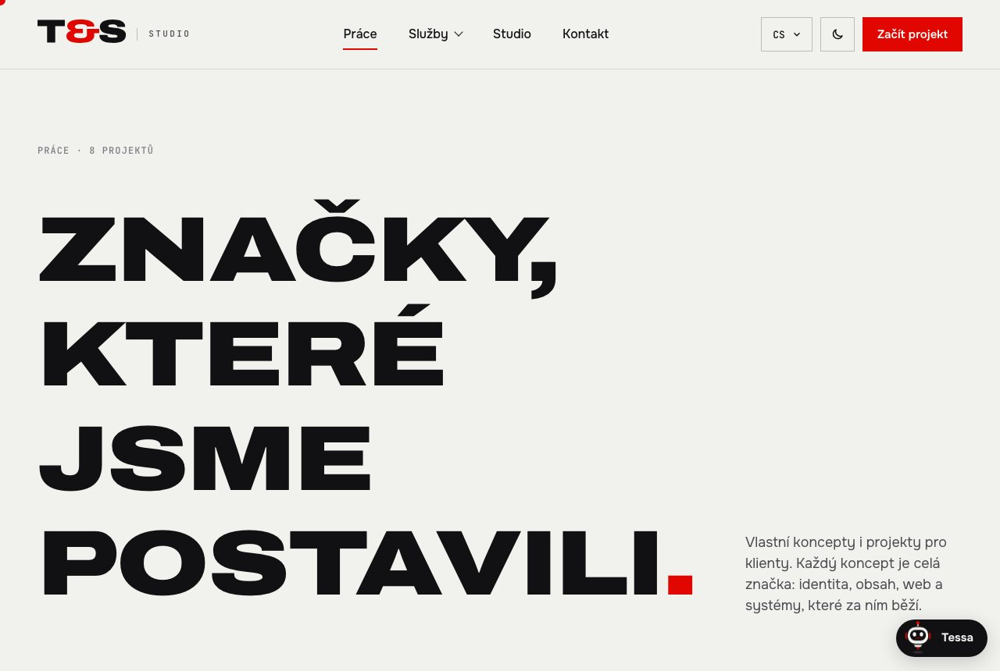
Stránka Reference
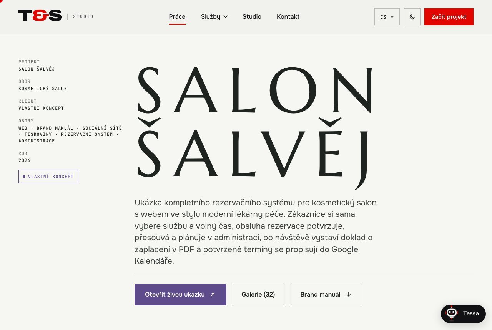
Detail zakázky
V detailu zakázky jsou tlačítka pro otevření webu klienta (nebo ukázky), galerie, brand manuál a další soubory. Pokud jsou v administraci zapnuté ceny, objeví se rozpis „od … Kč“ a tlačítko Chci podobný projekt, které předvyplní poptávku. Vše na těchto stránkách se řídí tím, co uložíte v administraci v záložce Reference.
2.4 Ukázkové weby
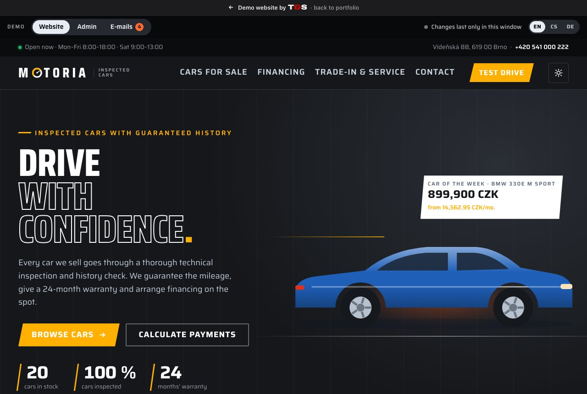
Ukázkový web Motoria (vymyšlená firma) s horní lištou ukázky
Ve složce /ukazky/ jsou plně funkční ukázky webů pro vymyšlené firmy (Motoria, Lokna, Kořen, Salon Šalvěj a další). Mají horní lištu, kterou se přepíná mezi webem, ukázkovou administrací a ukázkovými e-maily. Ukázky slouží jen k předvedení; data v nich nejsou skutečná a nic se z nich nikam neposílá. Na webu jsou označené „Ukázkový web · fiktivní značka“.
2.5 Lišta cookies
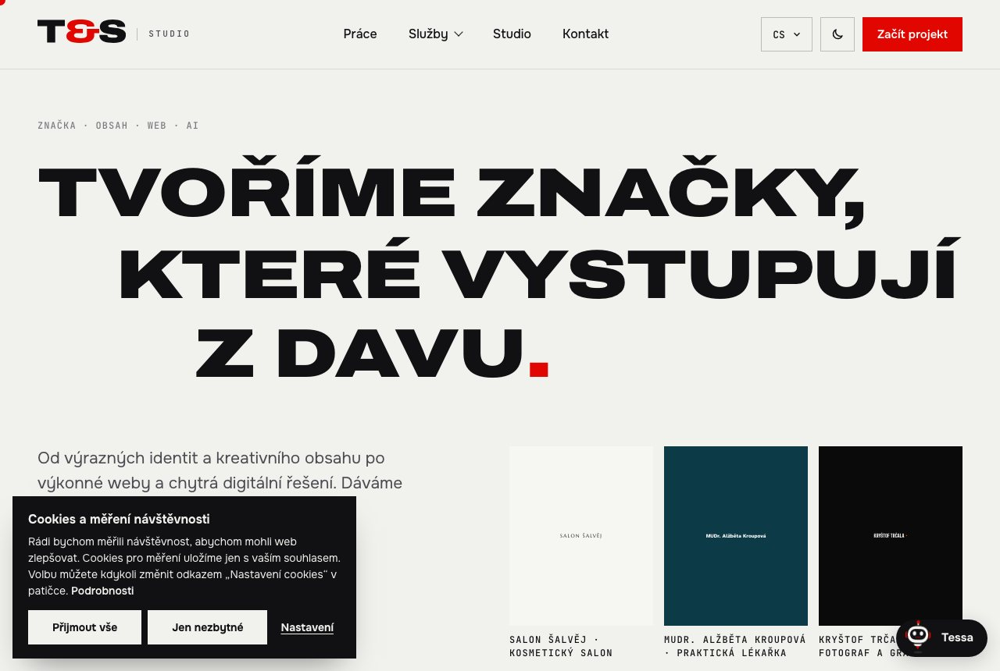
Lišta při první návštěvě
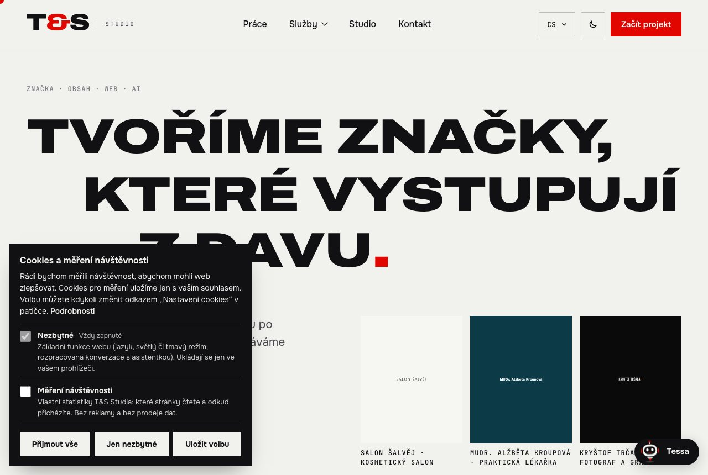
Podrobné nastavení
Při první návštěvě se vlevo dole ukáže lišta. Návštěvník volí:
Přijmout vše – zapne se vlastní měření návštěvnosti a (pokud je v administraci vyplněné ID) Google Analytics 4.
Jen nezbytné – nic se neměří, web funguje normálně.
Nastavení – zaškrtávání po kategoriích. Volbu lze kdykoli změnit odkazem Nastavení cookies v patičce.
Návštěvníci, kteří měření odmítnou, se v přehledu Návštěvnost nepočítají. Proto jsou čísla nižší než skutečný počet návštěv; je to záměr (ochrana soukromí).
2.6 Poptávkový formulář
Formulář je na stránce Kontakt (a zkrácený na úvodní stránce). Má tři kroky:
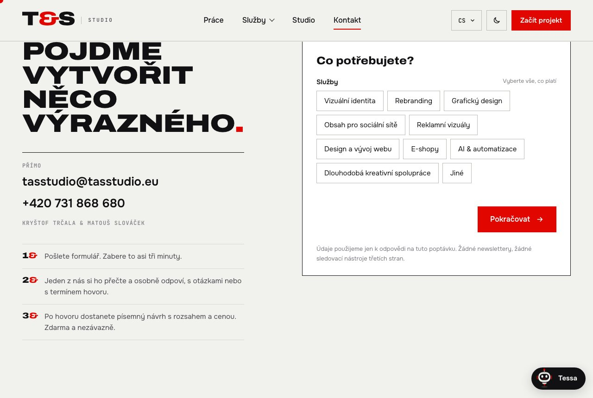
1. Co potřebujete (služby)
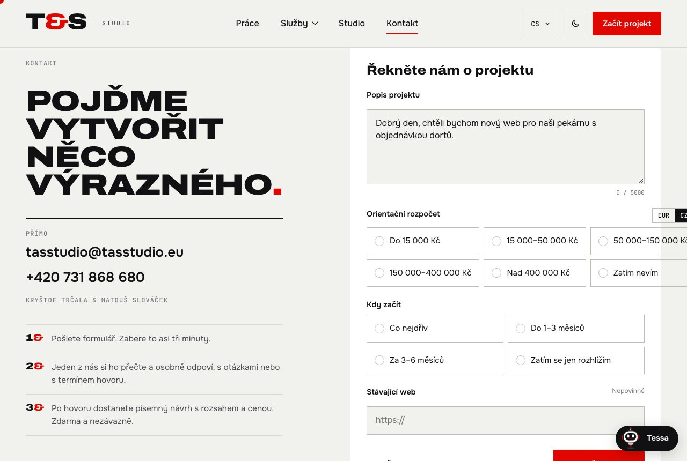
2. O projektu, rozpočet, termín
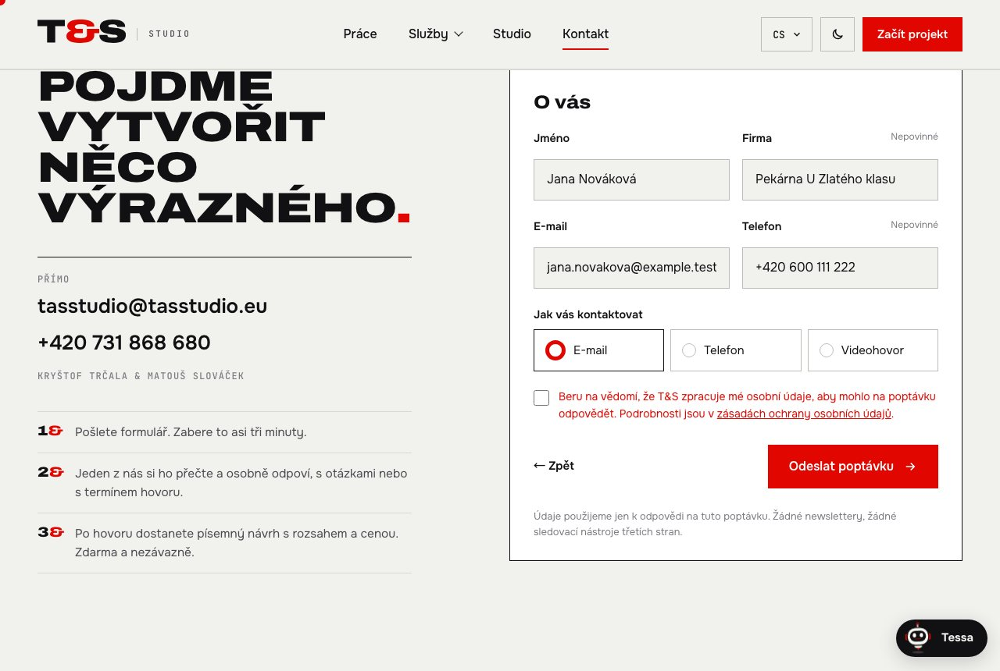
3. O vás a souhlas
Co potřebujete? Návštěvník zaškrtne služby a stiskne Pokračovat.
Řekněte nám o projektu: popis, orientační rozpočet, kdy začít, adresa současného webu.
O vás: jméno, firma, e-mail, telefon, preferovaný způsob kontaktu a souhlas se zpracováním údajů. Pak Odeslat poptávku.
Co se stane po odeslání
V CRM vznikne nový lead ve stavu Nový, nepřiřazený, se štítkem Z WEBU a s původní poptávkou (služby, rozpočet, zpráva, odkud návštěvník přišel).
Na tasstudio@tasstudio.eu přijde e-mail s celou poptávkou a tlačítkem Otevřít lead v administraci (ukázka v kapitole 15). Odpovědí na e-mail píšete rovnou zájemci.
Dvojklik nebo opakované odeslání téže poptávky nový lead nezaloží.
Ochrana proti robotům: skryté pole a minimální doba vyplnění. Robot dostane „úspěch“, ale nic se neuloží.
Kdyby databáze CRM nebyla dostupná, poptávka se neztratí: odejde aspoň e-mailem.
2.7 Telefon
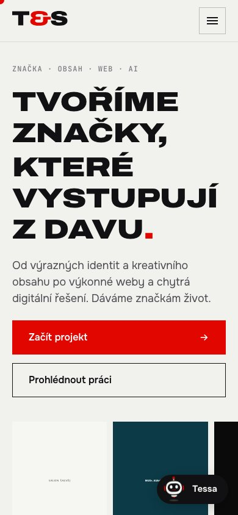
Úvod na telefonu
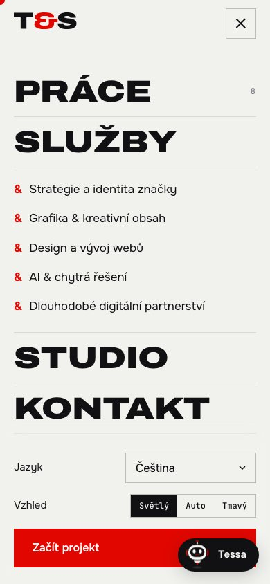
Menu (tlačítko se třemi čárami)
Na telefonu je menu schované pod tlačítkem vpravo nahoře. Dole v menu jsou výběr jazyka, vzhled (světlý / automaticky / tmavý) a Začít projekt.
Kapitola 3Asistentka Tessa
Tessa je AI asistentka T&S Studia. Otevírá se tlačítkem Tessa vpravo dole na každé stránce webu. Běží na bezplatném jazykovém modelu (Cloudflare Workers AI) a odpovídá jen z řízených znalostí o studiu (služby, reference, pravidla cen).
Neumí a nesmí: uvádět konkrétní ceny a termíny, slibovat výsledky, posílat nabídky, zobrazovat interní návrhy. Místo ceny doporučí podobnou referenci a nabídne kontakt.
Ovládání v hlavičce panelu: výběr jazyka, ztlumení hlasu, ↺ nová konverzace, × zavřít.
Návštěvník je vždy upozorněn, že mluví s AI a že se může mýlit.
3.2 Psaní a hlas
Návštěvník může psát, nebo kliknout na mikrofon a mluvit. Řeč rozpoznává prohlížeč návštěvníka (podle prohlížeče Google, Apple nebo Microsoft); ke studiu dorazí jen přepsaný text, zvuk se neukládá. Odpovědi Tessa čte nahlas svým hlasem (služba ElevenLabs s měsíčním stropem); když strop dojde nebo služba nefunguje, čte hlasem prohlížeče. Mikrofon se nikdy nezapne bez kliknutí a souhlasu prohlížeče; psaní funguje vždy.
3.3 Předání poptávky
Tessa nabídne kontakt
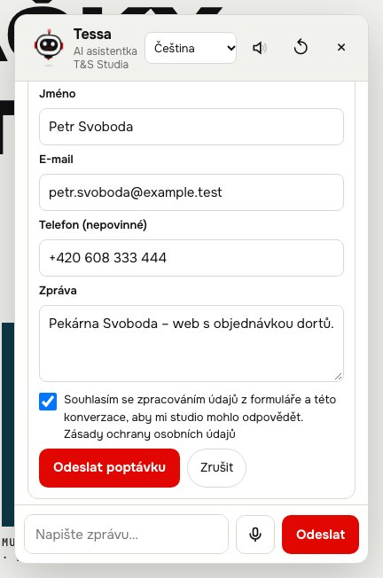
Formulář v chatu se souhlasem
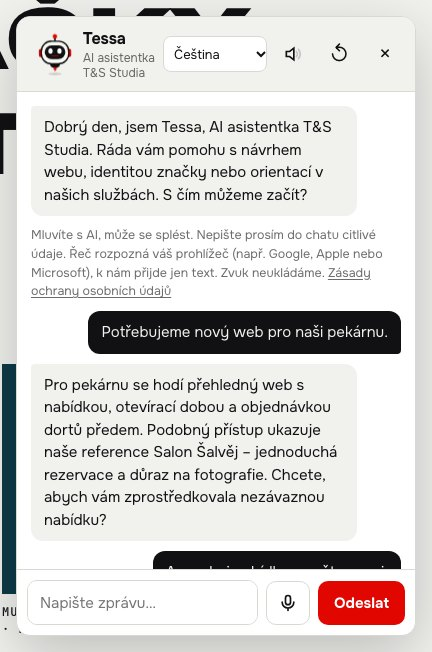
Potvrzení odeslání
Když návštěvník chce nabídku nebo kontakt, Tessa zobrazí tlačítko Kontaktovat studio a krátký formulář (jméno, e-mail, telefon, zpráva, souhlas). Osobní údaje sama v chatu nevyžaduje. Po odeslání:
v CRM vznikne lead se štítkem AI ASISTENT, ve stavu Nový a nepřiřazený, včetně přepisu konverzace;
na tasstudio@tasstudio.eu přijde e-mail „Poptávka z AI asistenta“ (ukázka v kapitole 15).
3.4 Audit webu v chatu
Když návštěvník napíše adresu svého webu, Tessa nabídne tlačítko pro audit. Měří se přes Google PageSpeed Insights (mobil i počítač) a AI přidá postřehy ke vzhledu. Návštěvník uvidí stručné shrnutí; úplný výsledek je pro tým v administraci v Auditech webů (kapitola 13). Počet auditů za den je omezený.
3.5 Ochrana a limity
Bezplatná kvóta Cloudflare (10 000 „neuronů“ denně) se dělí mezi Tessu (strop 6 000 za den) a audity. Po vyčerpání Tessa odpovídá jen náhradním textem s e-mailem studia; další den funguje zase.
Proti robotům: výpočetní výzva v prohlížeči před novou konverzací, kontrola původu požadavku, filtr robotů, limity na adresu a den. Pokud správce vloží klíče Cloudflare Turnstile, zapne se navíc ověření „nejsem robot“.
Formulář vyplněný nepřirozeně rychle se odmítne jako robot (stalo se i při testech – člověk to nepozná).
Konverzace se mažou po 30 dnech, leady z Tessy v databázi asistentky po 90 dnech (v CRM zůstávají).
Vypnutí Tessy: v souboru /private/ai/ai-consultant.php nastavit 'enabled' => false. Tlačítko z webu zmizí.
Kapitola 4Administrace: přihlášení a orientace
4.1 Přihlášení a hesla
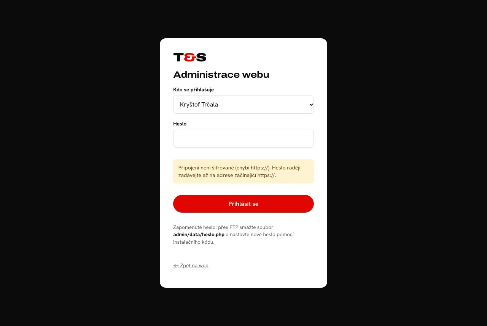
Přihlašovací obrazovka
Otevřete www.tasstudio.eu/admin/.
V poli Kdo se přihlašuje vyberte své jméno (prohlížeč si volbu pamatuje).
Zadejte své heslo a klikněte na Přihlásit.
Kdo si ještě nenastavil vlastní heslo, přihlásí se společným heslem administrace a nahoře uvidí žlutou výzvu „nastavte si prosím vlastní heslo“. Heslo si nastaví v Účet a nápověda (kapitola 8).
Heslo musí mít aspoň 10 znaků.
Po 6 špatných pokusech se přihlášení z dané adresy na 15 minut zamkne.
Po 12 hodinách nečinnosti vás administrace odhlásí. Když se to stane během práce, objeví se okno Přihlaste se znovu; po přihlášení můžete pokračovat, rozpracované změny zůstanou.
Zapomenuté hesloV administraci se heslo obnovit nedá (žádné „zapomněl jsem heslo“ e-mailem). Postup je v kapitole 16 (scénář „Zapomněl jsem heslo“). Hesla nikdy neposílejte e-mailem ani do chatu.
První spuštěníNa úplně nové instalaci se místo přihlášení ukáže První spuštění administrace: zadá se instalační kód ze souboru PRISTUP-DO-ADMINU.txt a dvakrát nové heslo. Na tasstudio.eu je to dávno hotové.
4.2 Rozvržení obrazovky
Horní lišta administrace a záložka Reference
Prvek
Co dělá
Logo T&S Administrace
Otevře web v nové záložce.
Reference
Zakázky zobrazené na webu (kapitola 5).
CRM / Leady
Leady, úkoly, poptávky, návrhy webů. Červené číslo = počet vašich úkolů na dnešek a po termínu.
Kontakty a údaje
E-mail, telefon, údaje provozovatele, sociální sítě, ceny, Google Analytics (kapitola 6).
Zálohy
Návrat webu do dřívějšího stavu (kapitola 7).
Účet a nápověda
Mezipaměť webu, návod, změna hesla, odhlášení (kapitola 8).
Iniciály a jméno
Kdo je přihlášený.
● Vše uloženo / Neuloženo
Stav změn v Referencích a Kontaktech.
Návštěvnost
Přehled měření návštěvnosti (kapitola 14).
Audity
Audity webů (kapitola 13).
Web ↗
Otevře web.
Uložit změny
Uloží Reference a Kontakty a hned je zveřejní. CRM se ukládá samo u každé akce.
4.3 Administrace v telefonu
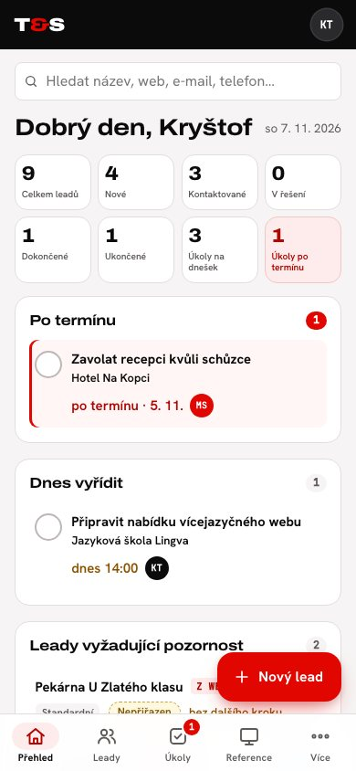
Přehled CRM v telefonu
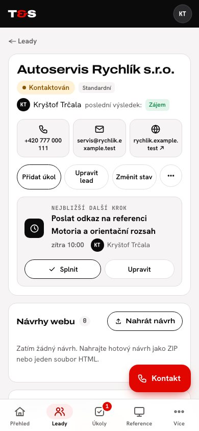
Detail leadu
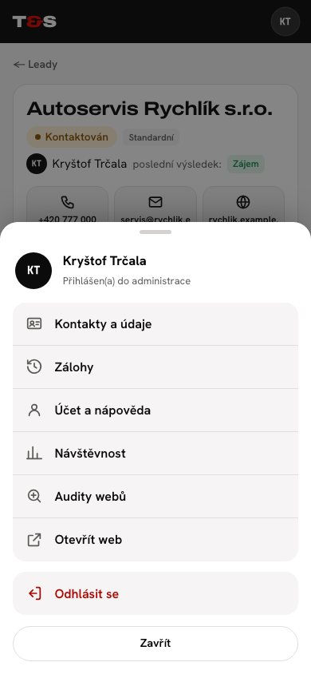
Nabídka Více
V telefonu je dole lišta jako v aplikaci: Přehled, Leady, Úkoly, Reference a Více (Kontakty a údaje, Zálohy, Účet a nápověda, Návštěvnost, Audity webů, Otevřít web, Odhlásit se). Červené tlačítko vpravo dole zakládá lead nebo zaznamenává kontakt. Vše ostatní funguje stejně jako na počítači.
Kapitola 5Reference (zakázky na webu)
5.1 Seznam a pořadí
Vlevo je seznam zakázek. Pořadí v seznamu = pořadí na webu. Šipkami ▲ ▼ zakázku posunete. Štítky: HLAVNÍ STR. – zakázka je i na úvodní stránce; UKÁZKA – vymyšlená firma (ukázkový web). Kliknutím zakázku otevřete v editoru vpravo.
5.2 Editor zakázky po oddílech
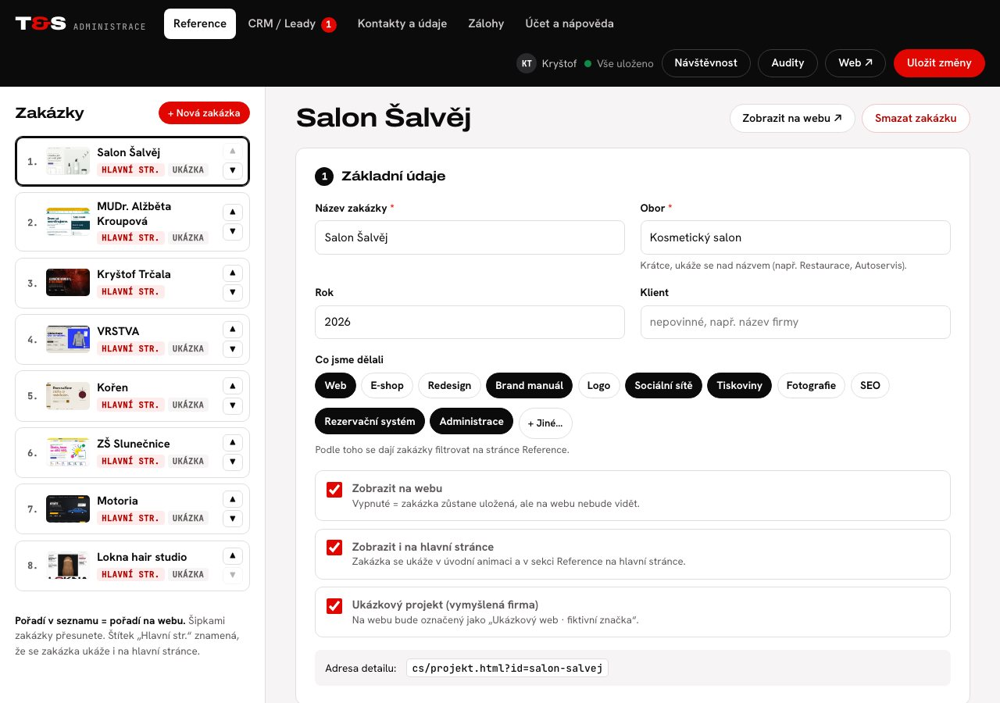
Oddíl 1 – Základní údaje
1 Základní údaje
Název zakázky* a Obor* (krátce, např. „Autoservis“) – povinné.
Rok, Klient (nepovinné).
Co jsme dělali – štítky (Web, E-shop, Redesign, Brand manuál, Logo, Sociální sítě, Tiskoviny, Fotografie, SEO, Rezervační systém, Administrace, + Jiné…). Podle nich se filtruje na stránce Reference.
Zobrazit na webu – vypnuté = zakázka zůstane uložená, ale na webu nebude.
Zobrazit i na hlavní stránce – zakázka bude v úvodní animaci a v referencích na úvodní stránce.
Ukázkový projekt (vymyšlená firma) – na webu bude označen „Ukázkový web · fiktivní značka“.
Adresa detailu – vytvoří se sama z názvu.
2 Web a náhled
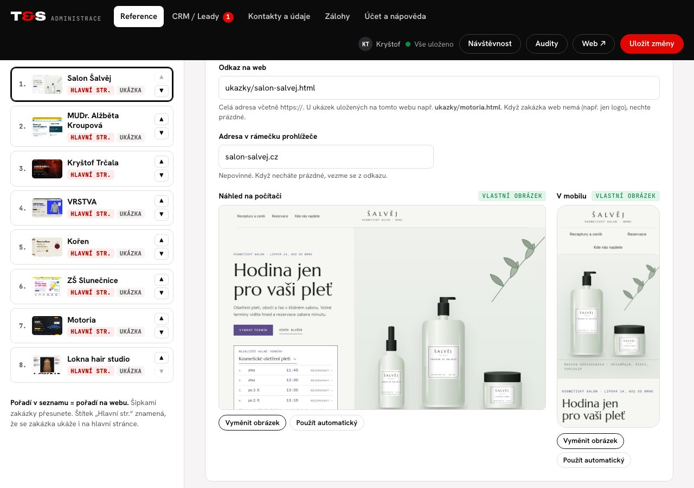
Oddíl 2 – odkaz na web a automatické náhledy
Odkaz na web – celá adresa včetně https://. U ukázek uložených na tomto webu např. ukazky/motoria.html. Zakázka bez webu (např. jen logo) pole nechá prázdné.
Náhled webu (počítač i telefon) se po vložení odkazu vytvoří sám a po uložení se uloží na server. Vyměnit obrázek nahraje vlastní; Použít automatický vrátí vytvořený.
Adresa v rámečku prohlížeče – co se ukáže v řádku adresy na obrázku náhledu.
3 Texty
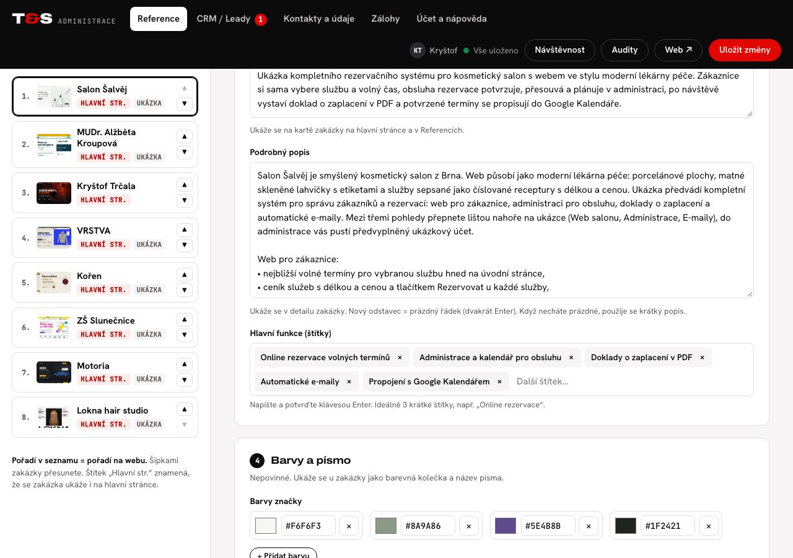
Oddíl 3 – texty a štítky funkcí, začátek oddílu 4
Krátký popis (do 280 znaků) – na kartě zakázky. Počítadlo ukazuje, kolik znaků zbývá; přes limit zčervená.
Podrobný popis – v detailu zakázky. Nový odstavec = prázdný řádek (dvakrát Enter). Prázdný = použije se krátký popis.
Hlavní funkce (štítky) – napište a potvrďte Enterem; ideálně 3 krátké štítky. Křížkem odeberete.
4 Barvy a písmo
Nepovinné. Barvy značky (kód #RRGGBB nebo výběr kolečkem, + Přidat barvu, × odebrat) a název písma. Na webu se ukážou jako barevná kolečka a název písma.
5 Galerie a 6 Soubory ke stažení
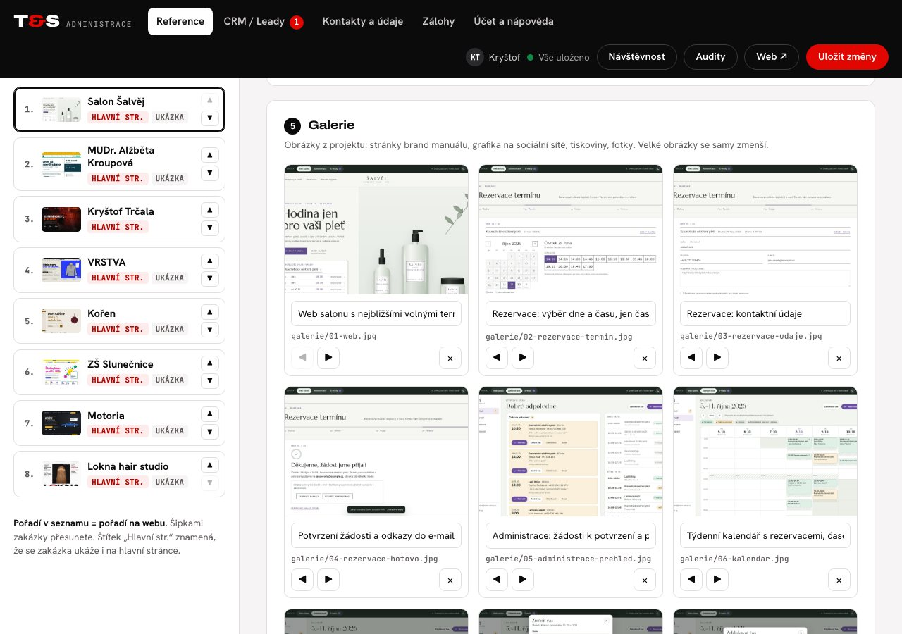
Oddíl 5 – Galerie
+ Přidat obrázky – stránky brand manuálu, grafika, fotky. Velké obrázky se samy zmenší. Šipkami ◀ ▶ měníte pořadí, × odebere. Prázdná galerie se v detailu nezobrazí.
+ Přidat soubory – např. brand manuál v PDF, tisková data, logo v ZIPu. Název napište tak, jak se má ukázat na webu. Největší soubor 150 MB; nahrává se po částech, počkejte na dokončení.
7 Orientační cena
Cena od (Kč) a rozpis položek (+ Přidat položku, ▲ ▼, ×). Na webu se ceny ukážou, jen když je v záložce Kontakty a údaje zapnuté Zobrazovat orientační ceny.
8 Překlady
Texty zakázky pro další jazykové verze webu. Co nevyplníte, ukáže se anglicky, a když chybí i angličtina, česky. Názvy značek se nepřekládají.
5.3 Ukládání a koncept
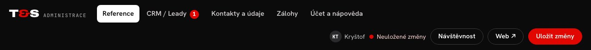
Neuložené změny v liště
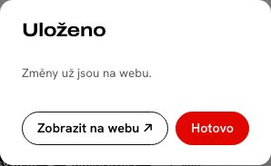
Po uložení
Udělejte změny. Stav vpravo nahoře se změní na Neuloženo.
Klikněte na Uložit změny. Ukáže se průběh (obrázky se nahrávají na server).
Okno Uloženo – Změny už jsou na webu. Zobrazit na webu ↗ otevře web, Hotovo zavře okno.
Před každým uložením se automaticky vytvoří záloha předchozího stavu (kapitola 7).
Neuložené změny si prohlížeč pamatuje. Když okno omylem zavřete, po návratu uvidíte žlutý pruh V tomto prohlížeči jsou neuložené změny z … s možností je obnovit nebo zahodit. Koncept je jen v tom prohlížeči a počítači.
Když server upozorní na problém (např. chybějící povinné pole), uložení se neprovede a chyba se ukáže u pole.
Dva lidé najednouReference a kontakty se ukládají jako celek. Když dva lidé upravují Reference současně, vyhraje pozdější uložení. Domluvte se, kdo právě upravuje web (v CRM tento problém není, tam se hlídá každá změna zvlášť).
5.4 Nová, skrytá a smazaná zakázka
+ Nová zakázka vlevo nahoře; vyplňte název a obor.
Vložte odkaz na web (náhled se vytvoří sám), napište krátký a podrobný popis.
Přidejte obrázky a soubory, zaškrtněte, zda má být i na hlavní stránce.
Šipkami zařaďte na správné místo a klikněte na Uložit změny.
Skrýt zakázku: vypněte Zobrazit na webu a uložte. Kdykoli ji vrátíte.
Smazat: Smazat zakázku v editoru a uložit. Obrázky a soubory jdou do koše; obnovením zálohy se vrátí i s nimi.
Připravené podklady: když vývojář nahraje podklady k zakázce na server, objeví se žlutý pruh „nové podklady“ nebo „přidali jsme připravenou zakázku“. Zkontrolujte ji a uložte, nebo zvolte Ponechat současnou verzi.
Kapitola 6Kontakty a údaje
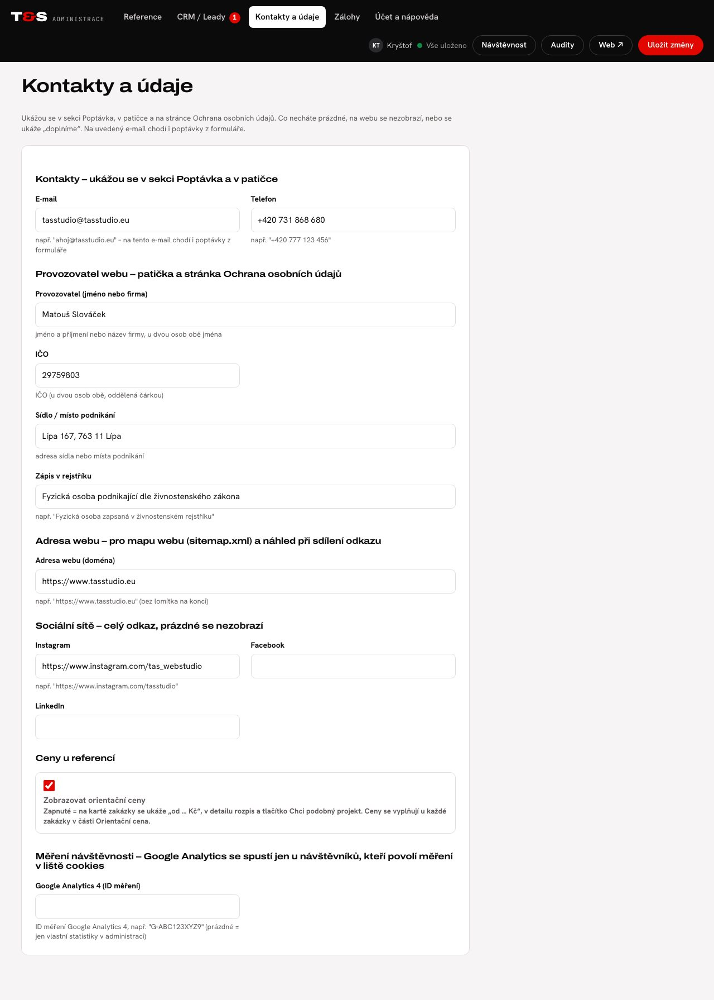
Záložka Kontakty a údaje
Údaje se ukážou v sekci Poptávka, v patičce a na stránce Ochrana osobních údajů ve všech jazycích. Co necháte prázdné, na webu se nezobrazí (nebo se ukáže „doplníme“). Změny se projeví po Uložit změny.
Skupina
Pole
Kontakty
E-mail (chodí na něj i poptávky z formuláře), telefon
Provozovatel webu
Jméno nebo firma, IČO, sídlo, zápis v rejstříku
Adresa webu
Doména – pro mapu webu (sitemap.xml) a náhledy při sdílení
Sociální sítě
Instagram, Facebook, LinkedIn – celý odkaz
Ceny u referencí
Zobrazovat orientační ceny – zapne „od … Kč“ na kartách a rozpis v detailu
Měření návštěvnosti
Google Analytics 4 (ID měření G-…); spouští se jen po souhlasu v liště cookies
Změna e-mailu změní i adresu, kam chodí poptávky z formuláře. Zkontrolujte ji dvakrát.
Kapitola 7Zálohy
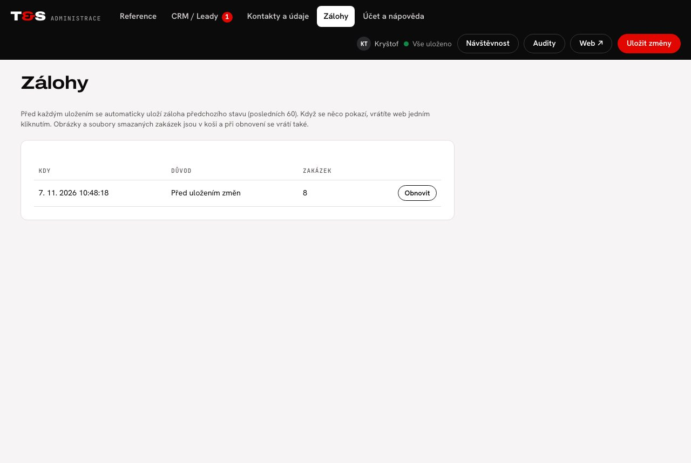
Seznam záloh
Před každým Uložit změny se automaticky uloží záloha předchozího stavu referencí a kontaktů. Uchovává se posledních 60 záloh.
Tabulka ukazuje Kdy, Důvod (např. Před uložením, Před obnovením), Počet zakázek a tlačítko Obnovit.
Obnovit vrátí web do stavu zálohy včetně obrázků a souborů smazaných zakázek. Před obnovením se uloží záloha současného stavu, takže krok jde vrátit.
CRM se zálohuje zvlášťDatabáze CRM se zálohuje sama jednou denně (posledních 30 dní) do neveřejné složky na serveru. Obnovení CRM není v administraci – je to úkol pro správce serveru (kapitola 18). Záložka Zálohy CRM nevrací.
Kapitola 8Účet a nápověda
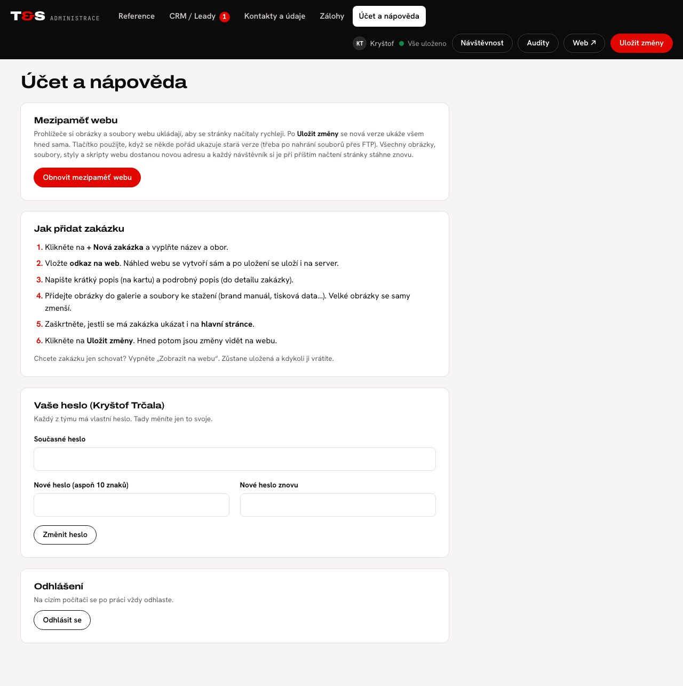
Účet a nápověda
Mezipaměť webu
Po Uložit změny se nová verze ukáže všem sama. Tlačítko Obnovit mezipaměť webu použijte, jen když se někde pořád ukazuje stará verze (typicky po nahrání souborů přes FTP). Všechny obrázky, styly a skripty dostanou novou adresu a návštěvníci si je stáhnou znovu.
Jak přidat zakázku
Stručný návod (stejný jako v kapitole 5.4).
Vaše heslo
Do Současné heslo napište své heslo (kdo ještě vlastní nemá, napíše společné heslo administrace).
Dvakrát nové heslo, aspoň 10 znaků.
Změnit heslo. Každý mění jen své heslo.
Odhlášení
Odhlásit se. Na cizím počítači se po práci vždy odhlaste.
Kapitola 9CRM: přehled, leady, úkoly
9.1 Pojmy CRM
Stav leadu
Význam
Nový
Zatím jsme s ním nemluvili.
Kontaktován
Proběhl první kontakt. Nastaví se sám po prvním zaznamenaném kontaktu.
V řešení
Aktivně se jedná (nabídka, návrh, schůzky). Nastaví se sám po druhém kontaktu.
Dokončeno
Úspěšně uzavřeno – zakázka je naše / hotová.
Ukončeno
Uzavřeno bez zakázky (nezájem, nereaguje…). Lze uvést důvod.
Priorita: Nízká, Standardní, Vysoká (▲). Původ: Zadaný ručně, Načtený ze souboru, Poptávka z webu (štítek Z WEBU), AI asistent na webu (štítek AI ASISTENT). Typy kontaktu: telefonát, e-mail, osobní schůzka, videohovor, jiný. Výsledky kontaktu: Bez odpovědi, Nezastižen, Zájem, Potenciální zájem, Požaduje více informací, Požaduje cenovou nabídku, Domluvena schůzka, Odloženo na později, Nezájem, Jiný výsledek.
Zlaté pravidlo CRMKaždý aktivní lead má mít odpovědnou osobu a další krok s termínem – nebo být výslovně označen „Čeká bez termínu“. Přehled vám pak sám ukáže, co je potřeba udělat.
9.2 Přehled
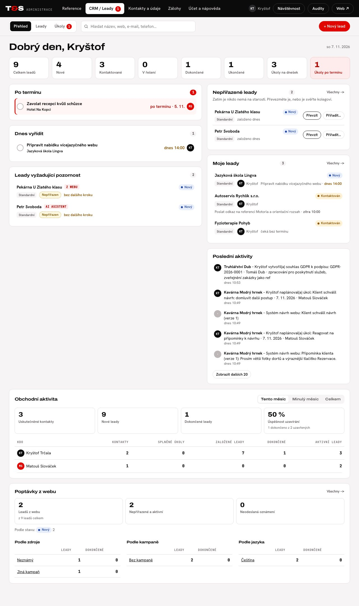
Přehled CRM (záložka CRM / Leady › Přehled)
Dlaždice nahoře: celkem leadů, nové, kontaktované, v řešení, dokončené, ukončené, úkoly na dnešek, úkoly po termínu. Kliknutím otevřete odpovídající seznam.
Po termínu (červeně) a Dnes vyřídit – vaše úkoly. Kolečkem vlevo úkol splníte.
Leady vyžadující pozornost – bez dalšího kroku, nepřiřazené, dlouho bez aktivity.
Nepřiřazené leady – Převzít (budou vaše) nebo Přiřadit… kolegovi.
Souhlasy GDPR k obnovení – souhlasy s referencí, kterým za 2 měsíce končí platnost.
Moje leady, Poslední aktivity (kdo co kdy udělal).
Obchodní aktivita – kontakty, nové a dokončené leady a úspěšnost za tento/minulý měsíc nebo celkem, rozepsané po lidech.
Poptávky z webu – počet leadů z webu, nepřiřazené, neodeslaná oznámení (e-maily, které se nepodařilo poslat), rozpad podle zdroje, kampaně a jazyka.
Hledání nahoře hledá v názvu, webu, e-mailu i telefonu napříč všemi leady.
9.3 Seznam leadů a filtry
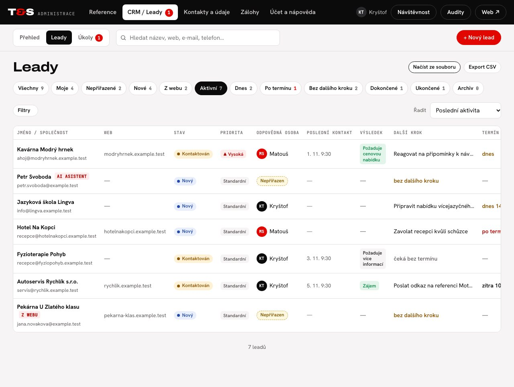
Seznam leadů s rychlými filtry
Rychlé filtry: Všechny, Moje, Nepřiřazené, Nové, Z webu, Aktivní, Dnes, Po termínu, Bez dalšího kroku, Dokončené, Ukončené, Archiv. Číslo = počet.
Filtry – podrobné: odpovědná osoba, obchodní stav, priorita, původ leadu, zdroj poptávky, kampaň, jazyk poptávky, vytvořeno od–do. Zrušit filtry vše vrátí.
Řadit – poslední aktivita, priorita, termín dalšího kroku, datum vytvoření, název.
Sloupce: jméno a e-mail, web, stav, priorita, odpovědná osoba, poslední kontakt, výsledek, další krok, termín. Řádek otevřete kliknutím (nebo šipkami a Enter).
Načíst ze souboru a Export CSV – viz 9.7.
9.4 Detail leadu
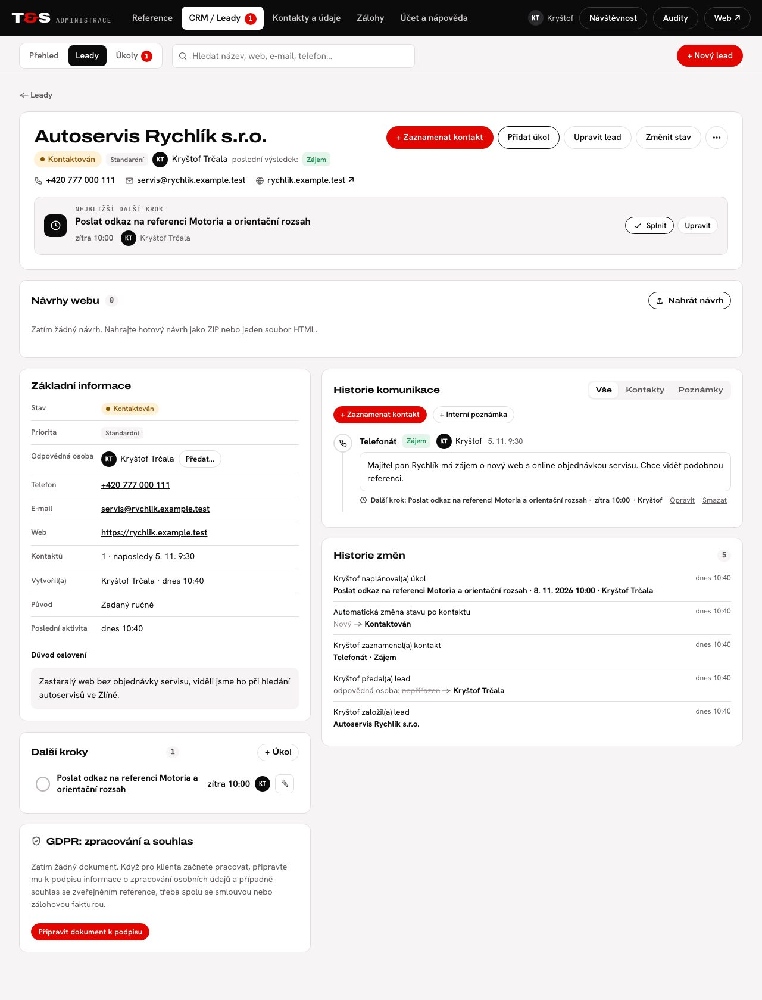
Detail leadu
Hlavička: název, stav, priorita, odpovědná osoba, poslední výsledek; telefon, e-mail a web jsou klikací.
Tlačítka:+ Zaznamenat kontaktPřidat úkolUpravit leadZměnit stav a ••• další akce.
Nejbližší další krok s termínem: Splnit nebo Upravit.
Návrhy webu – nahrání a odeslání návrhu klientovi (kapitola 12).
Základní informace, Další kroky (všechny úkoly), GDPR dokument a souhlas (kapitola 11).
Historie komunikace – kontakty a interní poznámky (přepínače Vše / Kontakty / Poznámky); u záznamu Opravit a Smazat.
Historie změn – kdo, kdy a co změnil (stav, odpovědná osoba, úkoly, návrhy…). Nedá se upravit.
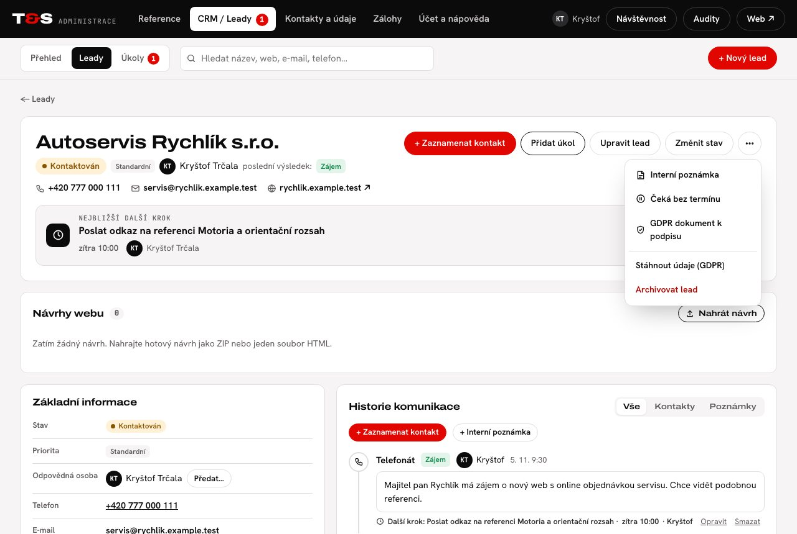
Nabídka ••• Další akce
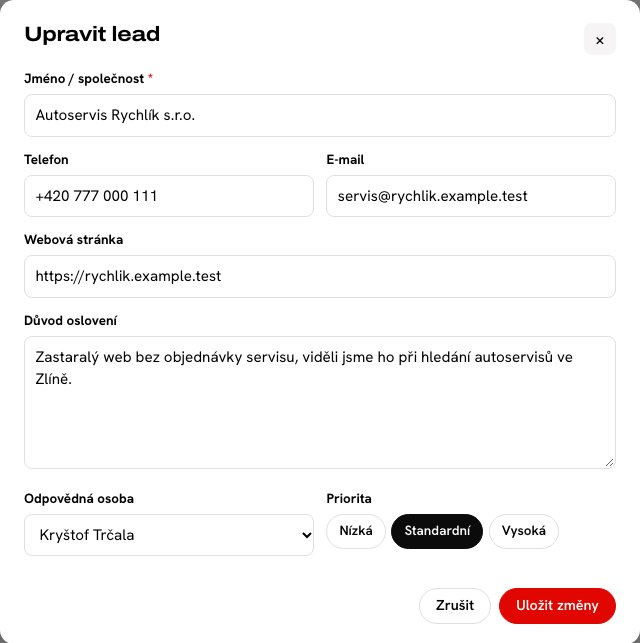
Upravit lead
••• Další akce: Interní poznámka, Čeká bez termínu, GDPR dokument k podpisu, Stáhnout údaje (GDPR), Archivovat lead.
9.5 Kontakty, úkoly, stavy
Zaznamenat kontakt (nejčastější akce)
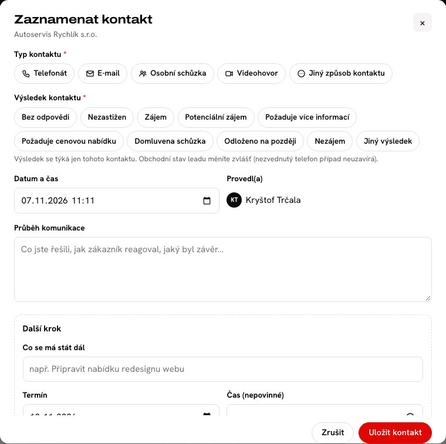
Zaznamenat kontakt
+ Zaznamenat kontakt.
Vyberte typ (telefonát, e-mail…) a výsledek.
Datum a čas – předvyplněno „teď“; kontakt nemůže být v budoucnosti.
Průběh komunikace – co jsme se dozvěděli, co klient chce.
Další krok – co se má stát dál, termín, případně čas a odpovědná osoba. Vznikne z toho úkol.
Uložit kontakt.
Pokud byl kontakt splněním naplánovaného úkolu, úkol se zároveň označí jako splněný. První kontakt změní stav Nový › Kontaktován, druhý › V řešení.
Změnit stav
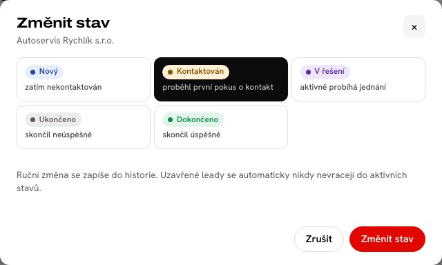
Změnit stav
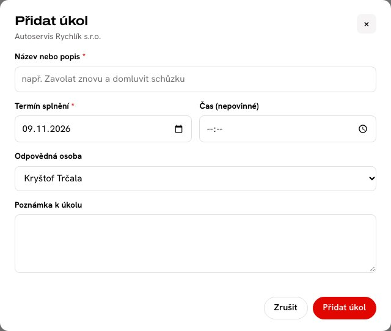
Přidat úkol
Ruční změna stavu se zapíše do historie. Při Dokončeno nebo Ukončeno lze vyplnit důvod a rozhodnout, co s otevřenými úkoly (zrušit). Uzavřený lead jde kdykoli Znovu otevřít.
Úkoly
Přidat úkol: název, termín splnění, nepovinný čas, odpovědná osoba, poznámka.
Úkol splníte kolečkem / Splnit. Volba Jen označit jako splněné splní úkol bez záznamu kontaktu; Zaznamenat výsledek a další krok otevře okno kontaktu.
Zrušit úkol – úkol se nebude dělat (zůstane v historii).
Když úkol mezitím vyřídil kolega, CRM to oznámí a nic nepřepíše.
Čeká bez termínu
Když čekáte na klienta a nevíte do kdy (např. „rozhodne se po poradě“), zvolte ••• › Čeká bez termínu a napište, na co se čeká. Lead pak nespadne mezi „bez dalšího kroku“. Zrušit čekání to vrátí.
Převzetí a předání
Nepřiřazený lead si vezmete Převzít, kolegovi ho dáte Přiřadit… nebo Předat…. Odpovědnou osobu jde změnit i v Upravit lead.
Interní poznámka
+ Interní poznámka – informace, která není kontaktem (např. „volat dopoledne paní Horákové“). Klient ji nikdy nevidí.
9.6 Úkoly
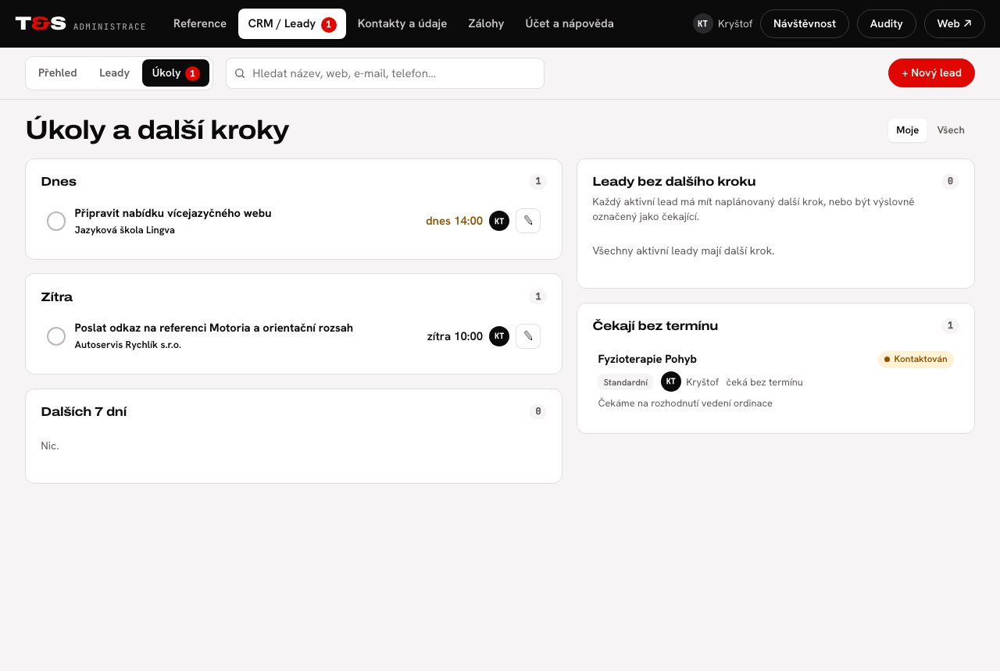
Záložka Úkoly
Čekající úkoly seskupené: Po termínu (jen když nějaké jsou), Dnes, Zítra, Dalších 7 dní; vpravo Leady bez dalšího kroku a Čekají bez termínu. Přepínač Moje / Všech nahoře. Červené číslo u Úkolů = počet vašich úkolů na dnešek a po termínu.
9.7 Nový lead, import, export
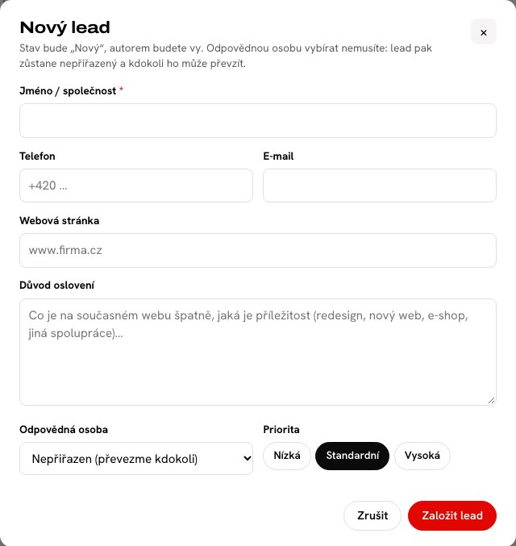
+ Nový lead
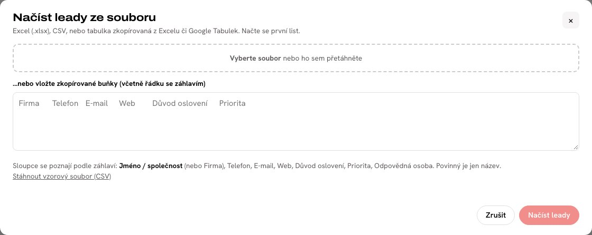
Načíst ze souboru
Nový lead
+ Nový lead: jméno/společnost (povinné), telefon, e-mail, web, důvod oslovení (proč a s čím jdeme), odpovědná osoba, priorita. Stav bude Nový. Když už v CRM existuje lead se stejným e-mailem, telefonem nebo webem, CRM na to upozorní a ukáže ho – můžete otevřít existující, nebo přesto založit nový.
Import ze souboru
Načíst ze souboru v seznamu leadů.
Vyberte CSV soubor, nebo vložte zkopírované buňky z Excelu/Tabulek včetně řádku se záhlavím. Stáhnout vzorový soubor (CSV) ukáže správný formát.
Sloupce se přiřadí samy podle záhlaví (jinak podle pořadí). Zvolte výchozí odpovědnou osobu a prioritu pro řádky, které je neuvádějí.
Nejdřív se ukáže náhled s počty nových, duplicitních a chybných řádků. Rozhodněte, co s duplicitami, a potvrďte.
Export
Export CSV stáhne leady podle aktuálního filtru (pro Excel). ••• › Stáhnout údaje (GDPR) stáhne vše o jednom leadu – použijte, když o své údaje požádá sám klient.
9.8 Archiv a trvalé smazání
Archivovat lead (••• Další akce) – lead zmizí ze seznamů a přehledu, ale nic se nesmaže. Najdete ho ve filtru Archiv; Obnovit z archivu ho vrátí. Archivovaný lead nejde upravovat.
Smazat trvale… – jen u archivovaného leadu a jen po napsání přesného názvu leadu. Smaže lead se všemi kontakty, úkoly, poznámkami, historií a naskenovanými souhlasy. Nedá se vrátit (kromě obnovy denní zálohy správcem). Používejte jen na žádost klienta o výmaz (GDPR).
Kapitola 10Poptávky z webu a od Tessy
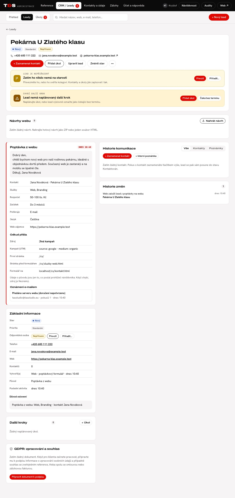
Lead z webového formuláře
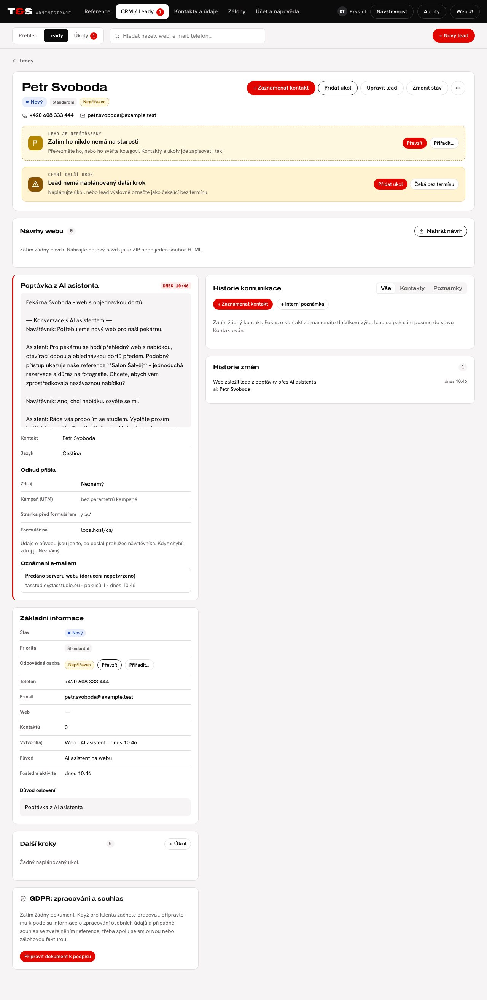
Lead od Tessy s přepisem konverzace
Lead z poptávky má navíc kartu Poptávka z webu / Poptávka z AI asistenta s původními údaji (služby, rozpočet, termín, zpráva, jazyk, odkud návštěvník přišel) a stavem oznámení e-mailem.
Doporučený postup s novou poptávkou
Přijde e-mail na tasstudio@tasstudio.eu a v CRM svítí lead mezi Nepřiřazenými.
Kdo se ujme: Převzít (nebo Přiřadit… kolegovi).
Odpovězte zájemci (odpověď na e-mail jde rovnou jemu) nebo zavolejte.
+ Zaznamenat kontakt s výsledkem a dalším krokem.
Stavy oznámení e-mailem
Stav
Význam a co dělat
Čeká na odeslání
Odejde během chvíle.
Odesláno (potvrdil poštovní server)
V pořádku.
Předáno serveru webu
Hosting ho přijal, doručení nepotvrdil. Obvykle v pořádku.
Nepodařilo se, zkusí se znovu
Další pokus proběhne sám, kdykoli někdo pracuje v CRM.
Selhalo (vyčerpány pokusy)
Poptávka je v CRM, jen e-mail nedorazil. Tlačítko Odeslat znovu; když opakovaně selhává, viz kapitola 16.
Kapitola 11GDPR dokument a souhlas s referencí
Pro klienty, se kterými spolupracujeme, CRM vytvoří PDF dokument: informace o zpracování osobních údajů pro poskytnutí služeb (nevyžaduje souhlas) a volitelný souhlas se zveřejněním zakázky jako reference, případně fotografie, jména a citace. Souhlas platí 3 roky od podpisu.
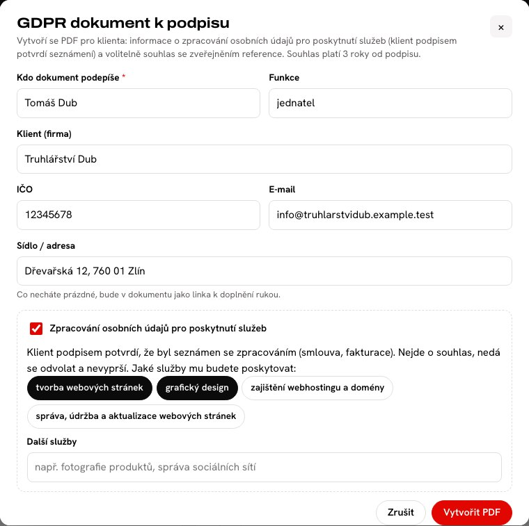
GDPR dokument k podpisu
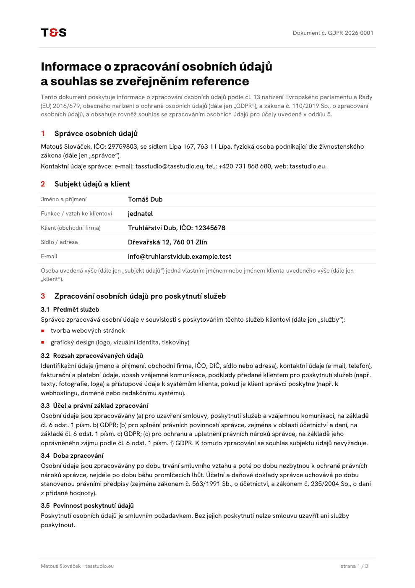
První strana vytvořeného PDF (3 strany)
V detailu leadu Připravit dokument k podpisu (nebo ••• › GDPR dokument k podpisu).
Vyplňte, kdo podepíše (jméno, funkce), firmu, IČO, e-mail, sídlo. Co necháte prázdné, bude v dokumentu jako linka k ručnímu vyplnění.
Zaškrtněte služby, které klientovi poskytujeme (případně další služby), a účely souhlasu.
Vytvořit PDF – dokument dostane číslo (např. GDPR-2026-0001) a stáhnete ho. Pošlete ho klientovi k podpisu.
Až ho klient podepíše: Zaznamenat podpis – datum podpisu, s čím klient souhlasil (co neodškrtl), a nahrát sken nebo fotku (PDF, JPG, PNG, do 20 MB).
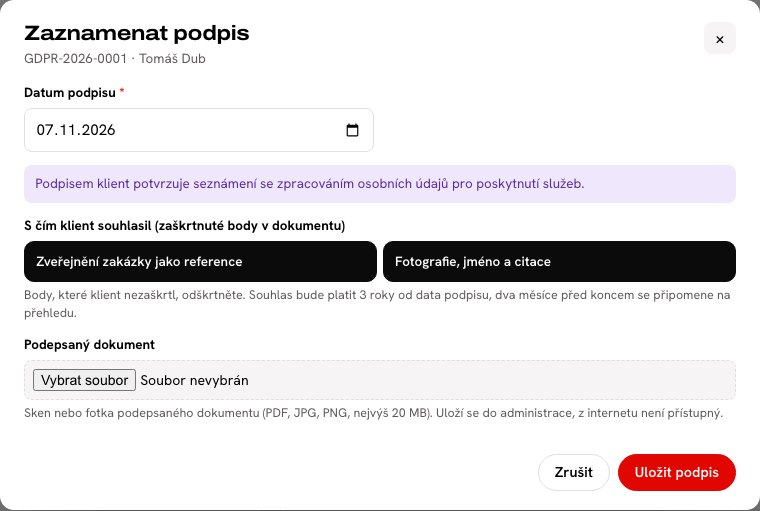
Zaznamenat podpis
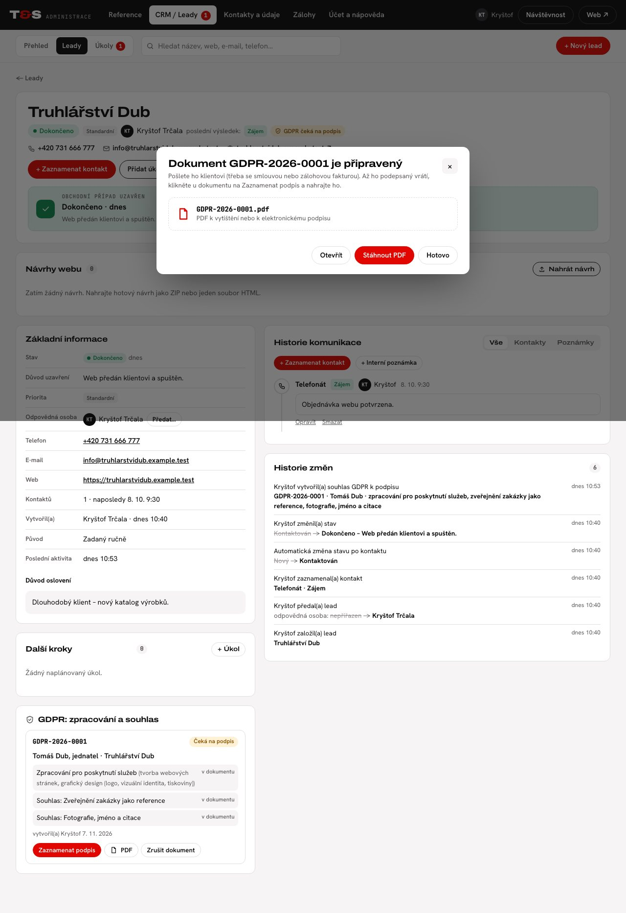
Dokument připravený k podpisu
Klient odvolal… – zaznamenejte odvolání (celé nebo jen některé účely) a datum. Zakázku pak stáhněte z webu (Reference › vypnout Zobrazit na webu, uložit).
Zrušit dokument – když se dokument nepodepíše (chyba v údajích apod.).
2 měsíce před koncem platnosti se souhlas objeví v Přehledu mezi Souhlasy GDPR k obnovení.
Naskenované dokumenty jsou na serveru v neveřejné složce, z internetu nejsou přístupné.
Kapitola 12Návrhy webů pro klienty
Návrh webu pro klienta vytvoříte mimo web (v Claude nebo jiném nástroji) jako hotové soubory. V CRM ho nahrajete k leadu, CRM z něj samo vytáhne přehled (barvy, písma, stránky, kontroly), vy ho zkontrolujete a pošlete klientovi. Klient si návrh prohlédne na neveřejné stránce, napíše připomínky nebo návrh schválí – a vy dostanete upozornění e-mailem i úkol v CRM.
Celý tok jedním pohledemNahrát návrh › zkontrolovat přehled a náhled › Poslat klientovi (zkontrolovat e-mail, potvrdit adresu) › klient otevře odkaz › připomínka nebo schválení › e-mail nám + úkol v CRM › nová verze › znovu poslat.
12.1 Nahrání a přehled
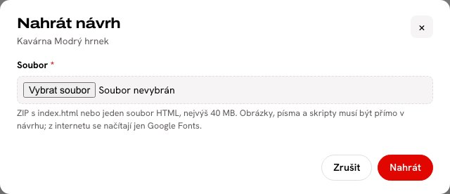
Nahrát návrh
Otevřete lead a v bloku Návrhy webu klikněte na Nahrát návrh.
Vyberte ZIP s index.html (a dalšími stránkami, styly, obrázky, písmy) nebo jeden soubor HTML. Nejvýš 40 MB a 800 souborů. Velké soubory se nahrávají po částech – nezavírejte okno.
Nahrát. Za chvíli se objeví přehled a náhled.
Co ZIP nesmí obsahovatSoubory PHP a jiné spustitelné soubory, cesty mimo složku, odkazy (symlinky) a šifrované soubory se odmítnou s vysvětlením. Obrázky, písma a skripty musí být přímo v ZIPu – z internetu se načítají jen písma Google Fonts. Formuláře v návrhu nikam neodesílají.
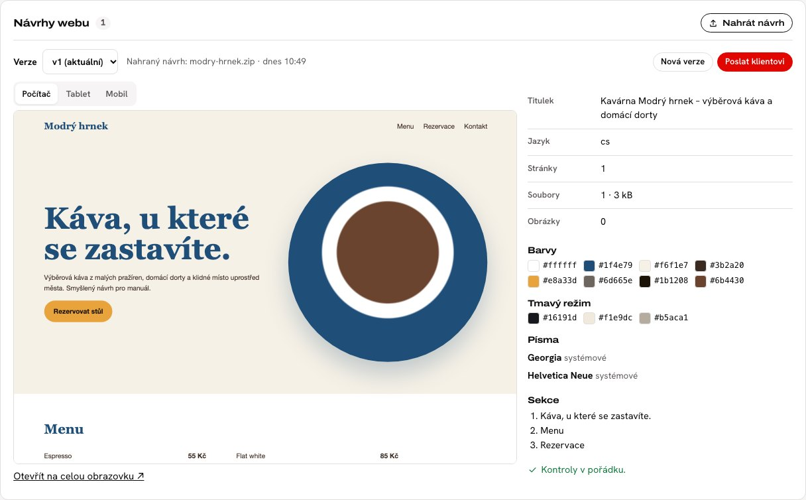
Přehled nahraného návrhu: náhled vlevo, vpravo vytažené údaje
Přehled obsahuje bez použití AI: titulek a popis stránky, počet stránek a souborů, velikost, barvy (včetně tmavého režimu a názvů proměnných), písma (Google / vlastní / systémová / chybějící), sekce podle nadpisů a kontroly (chybějící soubory, nefunkční odkazy, chybějící popisy…). Výběrem Verze přepínáte mezi nahranými verzemi. Náhled má přepínače Počítač / Tablet / Mobil a odkaz Otevřít na celou obrazovku. Návrh s vážnou chybou (např. chybějící soubor stylů) nejde poslat, dokud nenahrajete opravenou verzi.
12.2 Odeslání klientovi
Poslat návrh klientovi
Klikněte na Poslat klientovi u verze, kterou chcete poslat.
Zkontrolujte předvyplněné: e-mail příjemce (z leadu), jméno, předmět a text e-mailu. Text je česky, nebo anglicky podle jazyka poptávky; upravit ho můžete libovolně.
Značky v textu se nahradí samy: {odkaz} = neveřejný odkaz (povinný), {datum} = platnost, {jmeno} = váš podpis.
Platnost odkazu – 7 až 30 dní (výchozí 14).
Pro potvrzení opište e-mail příjemce – pojistka proti překlepu a odeslání omylem.
V bloku pak vidíte doručení: komu, kdy, do kdy platí, zda klient odkaz otevřel, a tlačítko Odvolat odkaz.
12.3 Co vidí klient
Stránka s návrhem pro klienta (nahledy.tasstudio.eu)
Klient otevře odkaz z e-mailu. Vidí návrh přes celou šířku (může se v něm proklikat, na telefonu se přizpůsobí) a vpravo panel Připomínky: k jaké části se vztahuje (nepovinné), text připomínky, jméno, Odeslat připomínku a Návrh schvaluji. Stránka nepoužívá cookies, není ve vyhledávačích a po vypršení platnosti nebo odvolání přestane fungovat.
Po odeslání připomínkyPo schválení návrhu
12.4 Připomínky a schválení
Po připomínce přijde e-mail „Připomínka k návrhu: …“ na tasstudio@tasstudio.eu i odpovědné osobě (ukázka v kapitole 15) s odkazem do CRM.
V CRM se připomínka objeví v bloku Návrhy webu, zapíše se do historie a vznikne úkol Reagovat na připomínky k návrhu (jen jeden, i když přijde víc připomínek).
Připomínku po vyřešení označte Vyřízeno; klient pak na své stránce vidí, že je vyřešená.
Po schválení přijde e-mail „Návrh schválen: …“ a vznikne úkol Klient schválil návrh: domluvit další postup.
Ochrana: nejvýš 20 připomínek za hodinu a 60 za den na jedno doručení; stejné připomínky se neukládají dvakrát.
Připomínka klienta v CRM s počtem nevyřízených
Připomínky se do CRM přenášejí ve chvíli, kdy někdo CRM otevře (e-mail ale odchází hned). Když tedy CRM nikdo nemá otevřené, úkol se v něm objeví až po otevření.
12.5 Nová verze, odvolání, platnost
Nová verze – nahrajete upravený ZIP ke stejnému návrhu (verze 2, 3…). Starší verze zůstávají v historii. Klientovi novou verzi pošlete znovu přes Poslat klientovi.
Odvolat odkaz – odkaz okamžitě přestane fungovat (např. poslali jste omylem jinou verzi nebo jinému člověku).
Po vypršení platnosti nebo odvolání klient uvidí stránku Odkaz neplatí s kontaktem na studio. Pošlete mu nový odkaz.
Připomínky se po 24 měsících anonymizují.
Kapitola 13Audity webů
Otevřete tlačítkem Audity v horní liště administrace (v telefonu Více › Audity webů), adresa www.tasstudio.eu/admin/audity.php. Slouží k rychlému posouzení webu zájemce před schůzkou nebo nabídkou.
Výsledek auditu (ukázková data)
Vložte adresu webu a klikněte na Spustit audit. Měření trvá obvykle do minuty.
Změřit znovu (bez mezipaměti) – jinak se do 24 hodin použije předchozí výsledek.
Výsledek: skóre Výkon, Přístupnost, Osvědčené postupy, SEO pro mobil a počítač, metriky (načtení největšího obsahu, blokování, posun rozvržení), Zjištěno měřením a Doporučení AI k vzhledu (subjektivní).
Poslední audity – seznam včetně auditů, které spustili návštěvníci přes Tessu. Mažou se po 30 dnech.
Měření je laboratorní (emulovaný telefon), ne data skutečných návštěvníků. Doporučení AI jsou názor, ne fakt – klientovi je tak i prezentujte. Některé weby měření blokují; pak audit skončí chybou.
Kapitola 14Návštěvnost
Přehled návštěvnosti za 30 dní (smyšlená data)
Tlačítko Návštěvnost v horní liště. Po otevření se ukáže posledních 30 dní; jiné období 7 / 30 / 90 / 365 dní vpravo nahoře; čísla se srovnávají s předchozím stejně dlouhým obdobím.
Dlaždice: návštěvníci, návštěvy, zobrazení stránek, stránek na návštěvu, odchod po jedné stránce, průměrná délka návštěvy.
Graf po dnech, nejnavštěvovanější stránky, odkud lidé přišli (vyhledávače, přímo, sítě, kampaně), weby, které na nás odkazují, jazyk, zařízení, prohlížeče, systémy a události (odeslaná poptávka, rozhovor s Tessou).
Počítají se jen návštěvníci, kteří v liště cookies povolili měření. Údaje se uchovávají 14 měsíců, bez IP adres.
Podrobnější statistiky má Google Analytics (pokud je v Kontaktech a údajích vyplněné ID) na analytics.google.com.
Kapitola 15Ukázky odesílaných e-mailů
Systém posílá tyto e-maily. Žádný z nich neodchází klientovi bez vašeho výslovného potvrzení – kromě upozornění, která chodí nám.
E-mail
Komu
Kdy
Nová poptávka z webu
tasstudio@tasstudio.eu
Návštěvník odešle formulář
Nová poptávka z AI asistenta
tasstudio@tasstudio.eu
Návštěvník odešle formulář v chatu Tessy
Návrh webu pro …
klient
Vy v CRM potvrdíte Odeslat e-mail
Připomínka k návrhu
tasstudio@ + odpovědná osoba
Klient odešle připomínku
Návrh schválen
tasstudio@ + odpovědná osoba
Klient klikne Návrh schvaluji
Poptávka z webového formuláře. Tlačítko otevře lead v administraci; odpověď jde přímo zájemci.Poptávka od Tessy včetně přepisu konverzace.
Pozn.: v ukázkovém prostředí je odesílatel „web@localhost“; na tasstudio.eu je to adresa domény webu.
E-mail klientovi s odkazem na návrh (text upravíte před odesláním). Na webu odkaz začíná https://nahledy.tasstudio.eu/.
Upozornění na připomínku klientaUpozornění na schválení návrhu
Odkaz „V CRM“ v upozorněních vede na lead v administraci (na webu https://www.tasstudio.eu/admin/#crm/lead/…).
Kapitola 16Scénáře a řešení problémů
Přihlášení a účet
Zapomněl jsem heslo
Obnova e-mailem neexistuje. Možnosti: (1) pokud jste si vlastní heslo nikdy nenastavili, přihlaste se společným heslem administrace; (2) jinak požádejte správce serveru (vývojáře) o smazání vašeho osobního hesla v databázi – pak se přihlásíte společným heslem a nastavíte si nové. Kolega vaše heslo změnit nemůže.
„Příliš mnoho špatných pokusů“
Po 6 chybách je přihlášení z vaší sítě 15 minut zamčené. Počkejte; zkontrolujte, zda máte vybrané správné jméno a vypnutý Caps Lock.
Uprostřed práce se objevilo „Přihlaste se znovu“
Vypršelo přihlášení (12 h nečinnosti) nebo jste se odhlásili v jiném okně. Zadejte heslo v okně – rozpracované změny zůstanou a uložení dokončíte.
Žlutý pruh „nastavte si vlastní heslo“
Přihlašujete se společným heslem. Nastavte si vlastní v Účet a nápověda › Vaše heslo.
Web a reference
Uložil jsem, ale na webu vidím starou verzi
Obnovte stránku (Cmd+Shift+R / Ctrl+F5) nebo zkuste anonymní okno.
Zkontrolujte, že stav v administraci je „Vše uloženo“.
Pomůže-li to jen vám, šlo o mezipaměť vašeho prohlížeče. Jinak Účet a nápověda › Obnovit mezipaměť webu.
Omylem jsem smazal nebo pokazil zakázku
Zálohy › najděte zálohu před chybou (podle času) › Obnovit. Vrátí se i obrázky a soubory. Současný stav se předtím sám zazálohuje.
Soubor s referencemi je poškozený (typicky po ruční úpravě přes FTP). Zálohy › obnovte poslední zálohu. Nic neukládejte, dokud pruh nezmizí.
Zavřel jsem okno s neuloženými změnami
Otevřete administraci ve stejném prohlížeči – žlutý pruh nabídne obnovení konceptu. Na jiném počítači koncept není.
Náhled webu u zakázky se nevytvořil nebo je špatný
Zkontrolujte odkaz (celý, s https://). Web klienta může tvorbu náhledu blokovat – nahrajte vlastní obrázek tlačítkem Vyměnit obrázek.
Chci zakázku jen dočasně schovat
Vypněte Zobrazit na webu a uložte. Nic se nesmaže.
Klient odvolal souhlas se zveřejněním reference
V CRM u leadu zaznamenejte odvolání (Klient odvolal…). V Referencích vypněte Zobrazit na webu (nebo zakázku smažte) a uložte.
CRM a poptávky
Přišel e-mail s poptávkou, ale nevím, kdo ji vyřídí
CRM › Přehled › Nepřiřazené leady › Převzít. Tím je jasné, že to máte vy, a kolega už ji neřeší.
Poptávka je v CRM, ale e-mail nepřišel
V detailu leadu na kartě poptávky zkontrolujte stav oznámení. „Nepodařilo se“ se zkusí znovu samo; „Selhalo“ – klikněte Odeslat znovu. Pokud selhává opakovaně, je problém s poštou hostingu – předejte vývojáři. Zkontrolujte i spam.
Zájemce poslal poptávku dvakrát / už ho v CRM máme
Dvojí odeslání téhož formuláře nový lead nezaloží. Pokud jde o dvě různé poptávky téhož člověka, vzniknou dva leady – jeden archivujte a důležité informace přepište do druhého jako poznámku.
Kolega změnil lead ve stejnou chvíli
CRM ukáže hlášku, že se lead mezitím změnil, a načte aktuální stav. Vaše úprava se nepřepíše přes jeho – zkontrolujte a zopakujte ji.
Odcházím na dovolenou
Úkoly: Moje › u každého leadu Upravit lead › Odpovědná osoba = kolega (nebo Předat…). Termíny úkolů posuňte.
Klient chce vědět, co o něm máme / chce výmaz
Vědět: ••• › Stáhnout údaje (GDPR) a pošlete mu soubor.
Výmaz: ••• › Archivovat lead › ve filtru Archiv otevřít › Smazat trvale… › napsat přesný název. Případnou referenci stáhněte z webu.
Omylem jsem archivoval lead
Leady › filtr Archiv › otevřít › Obnovit z archivu.
Omylem jsem trvale smazal lead
V administraci nejde vrátit. Okamžitě napište správci serveru: z denní zálohy CRM (posledních 30 dní) lze lead dohledat. Do té doby v CRM nic nemažte.
Import ze souboru hlásí chyby
Stáhněte vzorový CSV, porovnejte záhlaví. Chybné řádky náhled vypíše – opravte je v tabulce a importujte znovu jen je. Duplicity můžete přeskočit.
Návrhy webů
Nahrání ZIPu se odmítlo
Hláška říká proč: příliš velký (víc než 40 MB / 800 souborů), obsahuje PHP nebo jiný zakázaný typ, chybí index.html. Odstraňte problém a nahrajte znovu. Velké obrázky zmenšete.
Návrh nejde poslat („nejde poslat“ v přehledu)
Kontroly našly vážnou chybu (např. chybějící soubor stylů nebo stránka bez obsahu). Opravte soubory a nahrajte Novou verzi.
V náhledu chybí písmo nebo obrázky
Návrh nesmí načítat soubory z internetu (kromě Google Fonts). Vložte písma a obrázky přímo do ZIPu a odkazujte na ně relativně (např. img/logo.svg).
Odeslání hlásí chybu potvrzení
Opsaný e-mail se neshoduje s adresou příjemce. Opravte; nic se neodeslalo.
Poslal jsem návrh špatnému člověku / špatnou verzi
Ihned Odvolat odkaz u doručení. Pak pošlete správnou verzi správnému příjemci.
Klientovi odkaz nefunguje
Zkontrolujte v CRM platnost a stav doručení. Vypršel nebo byl odvolaný › pošlete nový. Klient má otevírat celý odkaz z e-mailu (některé poštovní programy ho zalomí).
Klient napsal připomínku, ale v CRM nic není
Připomínky se přenesou po otevření CRM. Otevřete Přehled a znovu detail leadu. E-mail o připomínce přichází hned.
Klient chce poslat podklady (fotky, texty)
Na stránce s návrhem přílohy nejdou. Ať je pošle e-mailem odpovědí na e-mail s návrhem.
Tessa, audit, návštěvnost
Tessa odpovídá jen „napište nám na e-mail“
Došla denní kvóta AI nebo má poskytovatel výpadek. Druhý den se obnoví sama. Opakuje-li se denně, kvótu vyčerpávají roboti nebo velký provoz – předejte vývojáři.
Tessa řekla něco nepravdivého
Zapište si přesné znění a stránku a předejte vývojáři – upraví se znalosti nebo pravidla. Konverzace jsou uložené na serveru 30 dní a obsahují osobní údaje návštěvníků.
Chci Tessu okamžitě vypnout
Správce serveru nastaví v /private/ai/ai-consultant.php hodnotu 'enabled' => false. Tlačítko z webu zmizí, zbytek webu funguje.
Audit skončil chybou
Web nemusí být dostupný, blokuje měření, nebo došel denní limit měření. Zkuste později nebo jinou adresu (s https://).
Návštěvnost ukazuje nuly
Buď v daném období nikdo nepovolil měření (zkuste delší období), nebo měření nefunguje – předejte vývojáři.
Kapitola 17Bezpečnost a pravidla
Hesla a klíče nikdy nepište do e-mailu, chatu, CRM poznámek ani do souborů na webu. Klíče služeb (Cloudflare, Google, ElevenLabs) vkládá jen provozovatel do neveřejné složky /private.
Administraci otevírejte jen přes https://. Na cizím počítači se odhlaste.
Interní schválení není odeslání. Klientovi nic neodchází bez kontroly a výslovného potvrzení.
Do CRM pište jen to, co je potřeba k obchodní komunikaci. Citlivé údaje (zdraví, rodná čísla, platební karty) do CRM nepatří.
Žádosti klientů o přístup k údajům nebo o výmaz vyřizujte do 30 dní (kapitola 16).
Konverzace s Tessou obsahují osobní údaje návštěvníků – na serveru je otevírejte jen, když je to nutné.
Klienti, kteří dostali odkaz na návrh, nevidí nic jiného než svůj návrh; odkaz je neveřejný a časově omezený. Přesto ho neposílejte dál.
Kapitola 18Technická příloha
Pro správce serveru a vývojáře. Běžný uživatel administrace tuto kapitolu nepotřebuje.
Hosting a složky
Složka na serveru (Active24)
Obsah
/web
Veřejný web včetně /web/admin (administrace) a /web/vendor/ts (knihovny).
/web/admin/data
Data administrace: CRM databáze, hesla, relace, zálohy, naskenované souhlasy. Nikdy nepřepisovat ani do ní nic nenahrávat. Z internetu je zavřená.
/sub/nahledy
Brána stránek s návrhy (nahledy.tasstudio.eu).
/private/ai
Konfigurace a znalosti Tessy, klíče, databáze konverzací.
/private/audit
Konfigurace auditů, klíč Google, výsledky a snímky (30 dní).
/private/stat
Konfigurace a databáze měření návštěvnosti.
/private/studio
Konfigurace návrhů (studio.php), nahrané návrhy, připomínky. Tajný klíč doručení v studio.php se nesmí měnit – jinak přestanou fungovat všechny odeslané odkazy.
Administrace › Kontakty a údaje › smazat ID měření › Uložit
Nahrávání změn (FTP)
Změny kódu se nahrávají připravenými balíčky přes FileZillu (zapnout zobrazení skrytých souborů, kvůli .htaccess). Každý balíček obsahuje návod a složku pro návrat.
Před nahráním stránek se musí sladit čísla verzí souborů (?v=…) s produkcí, protože je administrace při ukládání přeznačuje.
Po nahrání souborů přes FTP použijte v administraci Obnovit mezipaměť webu.
Služby třetích stran
Služba
K čemu
Limit
Cloudflare Workers AI
Odpovědi Tessy, postřehy AI v auditu
10 000 neuronů/den zdarma (Tessa 6 000)
ElevenLabs
Hlas Tessy
měsíční strop znaků
Google PageSpeed Insights
Měření v auditech
kvóta Google
Google Analytics 4
Volitelné statistiky
jen po souhlasu
Cloudflare Turnstile
Ochrana Tessy proti robotům (volitelně)
po vložení klíčů
Zálohy
Reference a kontakty: 60 záloh v administraci (kapitola 7).
CRM: denní kopie databáze, 30 dní, v /web/admin/data/crm-zalohy. Obnovení = nahrazení databáze kopií (nejdřív stáhnout současnou), jen správce serveru.
Doporučení: jednou měsíčně stáhnout celou složku /web/admin/data a /private do bezpečného úložiště mimo hosting.
Manuál vychází ze stavu webu a administrace k 7. 11. 2026. Při změnách funkcí je potřeba ho aktualizovat.